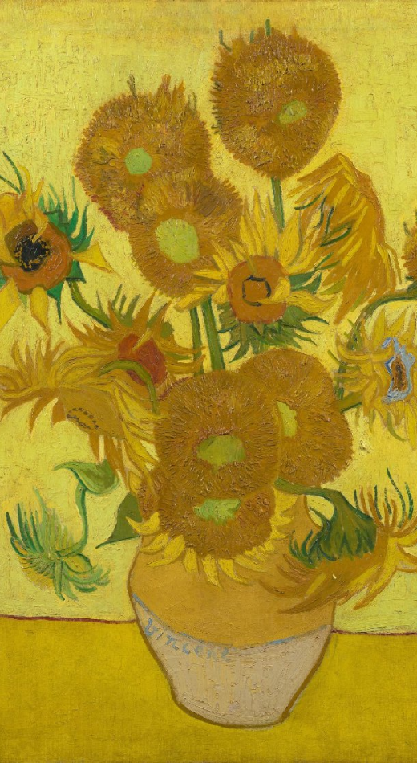

Nu te zien
Van Gogh aan de Seine
Kunstenaars Van Gogh, Seurat, Signac, Bernard en Angrand trokken vaak naar de oevers van de Seine. Waarom deden ze dat? En welke invloed had dat op hun schilderkunst?
Ontdek meer

Museum bezoeken? Bestel je kaartje online.
Steun het museum, doneer nu
Nu te zien
Kunstenaars Van Gogh, Seurat, Signac, Bernard en Angrand trokken vaak naar de oevers van de Seine. Waarom deden ze dat? En welke invloed had dat op hun schilderkunst?
Ontdek meer
Duik in het leven en werk van Vincent van Gogh, bekijk zijn schilderijen, tekeningen, brieven en meer.
Alles over Vincent

Welke kunstwerken van Vincent van Gogh en zijn tijdgenoten zijn nu te zien in het museum?
Bekijk in de online collectie
Jubileumjaar
In 2023 bestaat het museum 50 jaar! We vieren dit met bijzondere tentoonstellingen en feestelijke activiteiten. Vier je met ons mee?
Lees verder
Lees de verhalen
Steun het museum. Doneer nu
Onze hoofdsponsors:
scroll voor meer